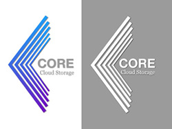

PHASE ONE
The Challenge
As part of the Research Team, our goal was to ask how might we find any gaps left by big-name market competitors in the cloud storage and organization market.
Once gaps were identified, it was essential that we build rapidly to create
- Define the user's needs
- Define the user's wants?
- Correct existing UX issues and
- Build out any improved features.
Here is how we addressed these challenges.
Competitive Analysis
This gave a better understanding of the current market as well as any potential gaps and untapped opportunities. From a design perspective the biggest takeaway was intuitiveness and an ability to collaborate.
The SWOT analysis can be found here.
User Research
This began wtih a survey that was sent out to social media contacts, friends, and peers to understand the users, the users needs and the users wants. The survey focused on the following:
- The specific cloud storage platform currently used.
- What do they specifically use the platform for i.e. storage of photos, collaboration with others, or personal and professional use.
- What features are the most valubale?
- What features do they value the least?
- What features or capabilities would they value if added?
- What are their current frustrations with the app/platform?
- What tasks do they conduct on the platform?
Surveying almost twenty people, the data showed that 94% used cloud storage on a regular basis and over half use cloud storage on a daily basis. And of the 16 people surveyed, 66% provided feedback/recommendations on how to improve cloud storage.
Research showed the frustration with cloud storage has to do with intuitiveness of the product. The user wants to:
- Interface with the product
- Option of guided help or live support through phone or chat
- Cost of service must be competitive in price.
- Pricing options for the professional, personal or student.
The Key Points:
- 1. Collaboration tools across multiple platforms
- 2. Organization of data
- 3. Ability to save photos, documents, and music across platforms into one location.
User Flows & User Stories
The user stories to highlight the main features of the product. The user stories were then converted into User flows to illustrate how the user would interact with the product and accomplish the goals.
VIEW USER STORIESUser Stories
High Priorties:
- Seamless saving of an item with auto save.
- Ability to save a link in social media.
- Auto uploading of files when initially created.
- Allow for initial organization preferences in settings under ctegories, tags, groups and/or folders.
- Local file system syncing.
- Digial App for smartphone and tablet.
- Seamless saving of data images, videos, and links.
- Handles large file transfers.
- Ability to create notes, documents, and spreadsheets within cloud.
- After documents, notes and spreadsheets with cloud.
- Intuitive software.
Medium Priorities:
- Save content while collaborating within the file.
- Ability to share content via sharable link on social media or within email.
- Supports an active directory where the user can easily see what files/folders/groups are in their cloud.
- Local file & version recovery.
- Saving content frome ails with the ability to track changes to a word document, notes, spreadsheets, and Powerpoint.
- Group permissions.
- Encryption of files when activated by the user for shared content.
- Two step verification.
- Single sign on.
Low Priorities:
- Drag and drop files.
- Saving links from emails.
- Open collaboration folders with ease.
- Allow for automatic uploading to desired files.
- Short videos that show how to create content.
- Short videos on how to correctly use software.
User Flows
Pen & Paper
Utilizing the research and design notes ideas were quickly sketched onto paper that would be used to create a simple wireframe in Sketch.

After completing the sketches with paper and pen, I walked some friends through the process after briefly describing the app. This user testing showed that most users want to simply use cloud storage from either their mobile device or their home computer, as well as the ability to quickly accessing their stored documents from anywhere. This information gather as a part of the user testing will be utilized during the process of creating a more refined hi-fidelity wireframe in Sketch.
Wireframes
Translating the user testing notes and design sketches, the following wireframes were designed. These designs would later be used to create a prototype in Sketch and then user-tested with Invision. The flow and design went through multiple designs and iterations.
VIEW WIREFRAMESBrand & Identity
This is where ideas and concepts are more than a thought or idea. Based on research, the brand needed to conceptualize the place were valued items are stored and shared, almost like a computer hard-drive. Based on research the brand needed to be trustworthy and simplistic.
High-Fidelity Prototype
The high-fidelity mockups were designed in Sketch. Using Apple’s Human Interface Guidelines, I applied the color pallete, sketches and typography guidelines previously determined.
User Testing
Translating the user testing notes and design sketches, the following wireframes were designed. These designed would later be used to create a prototype in Sketch and then user-tested with Invision. The flow and design went through multiple designs and iterations.
Preference Testing
First
Second
Final
Finished Product
As my very first UX project, I was responsibile for the project from start to finish. There were several challenges and learning moments along the way; however, each challenge and learning moment provided incredible value. This project gave me a perspective of the whole project from copy, research, branding, design and front-end development. The product went through three different iterations. This process enabled me to create a better product for the user, showcasing brand development, usability as well as simplicity throughout the whole design.
What I Learned
The process of designing a web based application, that is both simplistic and intuitive, revealed the amount of detail that the UX designer needs to possess. From surveys to usability tests, the ability to anticipate, understand, and identify the user’s problems effectively is a process that inspired and taught me more about the users needs. Applying my knowledge of both the user and user’s needs, I gained a deep appreciation for both Apple’s IOS guidelines. Ultimately, this process resulted in an improved prototype with better solutions for the user.